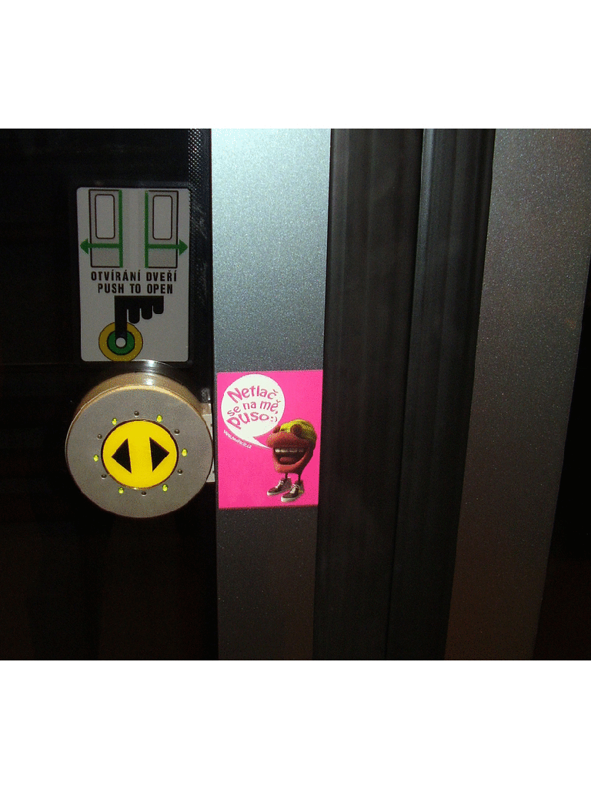
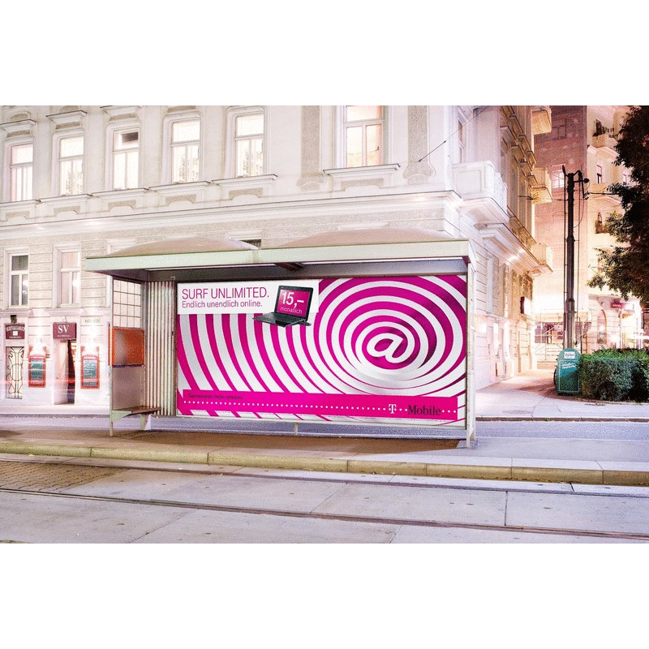

T-Mobile
Two years of stunts, hidden cameras, and 360° campaigns across nine European markets — before anyone else had figured out the playbook.

The Brief
Two years of 360° campaigns across nine European markets. Different products, different audiences, same platform: Life is for sharing. The job was to keep finding fresh ways to bring that line to life — before anyone else in the industry had figured out that real-life stunts and hidden cameras were about to become the most borrowed trick in advertising.
The Work
We were there before the playbook existed. No case studies to show the client. No proven benchmarks. Just ideas and the nerve to shoot them.
For Czech Christmas 2008, an unlimited calls offer became Mouth Walk — a 360° campaign built around the expression "let your mouth go for a walk," complete with plush toys that became collector's items. A year later, Revolution In Your Hands targeted a younger audience with a real-life stunt concept we had to sell on conviction alone, because nothing like it had been done before.
In Austria, we took the most generic brief in telecoms — unlimited data — and distilled it into Vortex, a single visual metaphor for endlessness, delivered on a tight budget with zero room for reshoots.

Back in Prague, we put hidden cameras on tram number 25 one October morning with a few planted laughers and twelve hidden lenses. The result — Contagious Laughter — captured an entire tram full of strangers cracking up for real. Then for the Family Package, we sent a comedian to photobomb families and jump into car trunks. We braced for angry reactions. Instead, one family nearly drove off with our actor in the back. Candid Family Picture became one of the first candid-camera commercials of a new era — before "photobomb" was even a word.
The Results
Some of the most effective work in the brand's history across multiple European markets — produced during the brief window when real-life stunts still felt genuinely surprising, and audiences hadn't yet learned to suspect the hidden camera.
Agency: Saatchi&Saatchi / Publicis Austria
Year: 2008–09